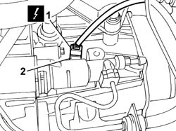

5550D22 REVERSING LIGHT SWITCH - R+R
- Path
- Procedures > 55 ELECTRICAL EQUIPMENT > 5550 WARNING AND MANOEUVRING INDICATORS > 5550D BRAKE AND REVERSING LIGHTS > 5550D22 REVERSING LIGHT SWITCH - R+R
- Kind
- repair procedure (removal / refitting; the operation number is the code)
- Applies to
- all engines; all production periods
- Interactive page
- https://sloeber94.github.io/elrnDB-fUlss/en/#/179007608
Applies to: all engines; all production periods
 Removing
Removing
 Refitting
RefittingOp. 5530B56 BATTERY DRIP TRAY COVER - R.R.
- Disconnect the negative battery terminal.
- Position the vehicle on a lift.
Op. 5010B18 CLIMATE CONTROL UNIT AIR INTAKE - R.R.
Op. 1048A10 AIR CLEANER FILTERING ELEMENT - REPLACE
1. Disconnect the electrical connection.
2. Undo and remove the reversing light switch.

Applies to: all engines; all production periods
Refitting
Removing- Position the reversing light switch and tighten it.
- Connect the electrical connection.
Op. 1048A10 AIR CLEANER FILTERING ELEMENT - REPLACE
Op. 5010B18 CLIMATE CONTROL UNIT AIR INTAKE - R.R.
- Remove the vehicle from the lift.
- Connect the negative battery terminal.